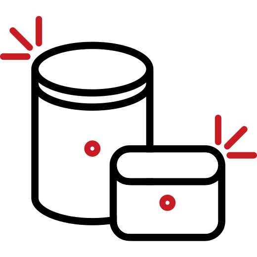

A la lata,
al latero...
La fotografía estenopeica es aquella que se captura sin la necesidad de utilizar lentes u objetivos. Requiere de una cámara oscura que en vez de dejar entrar la luz por un lente, lo hace a través de un pequeño agujero llamado estenopo, el cual direcciona la luz hasta incidir en una superficie sensible que se encuentra ubicada en la cara opuesta.

¿Quiénes somos?
Alalata es una taller de fotografía estenopeica experimental que nace en 2011 en la ciudad de Santa Fe, Argentina. Está dirigido por Cecilia De Paula y co-dirigido por Marta Yardín.
¿Qué hacemos?
En Alalata te enseñamos a construir tu propia cámara fotográfica, a sacar fotos y a revelarlas en el cuarto oscuro.
- No hay requisitos para la participación en el taller.
- No se requieren conocimientos previos sobre fotografía.
- Todos los materiales están incluidos.
- Se entrega certificado.
¿Qué vamos a enseñarte?
Este taller está orientado a todas aquellas personas que quieran aprender a construir su propia cámara fotográfica y experimentar con ella mediante la técnica de la fotografía estenopeica. Construiremos nuestra propia cámara y sacaremos fotos con ella utilizando papel fotosensible que luego revelaremos en el cuarto oscuro. Con nosotros aprenderas:
-

Fundamentos teóricos
Conceptos teóricos sobre la formación de la imagen. ¿Qué es la fotografía estenopeica? ¿Cómo se forma la imagen adentro de la cámara? Conceptos que intervienen en la captura de la imagen. Las singularidades de la fotografía estenopeica.
-

Construcción de la cámara
Conceptos teóricos y prácticos para la construcción de la cámara estenopeica. Cálculos que intervienen en la construcción y uso de la cámara. Construcción de la cámara en el taller.
-

Uso de la cámara
Salidas fotográficas. Tiempos de exposición según condiciones climáticas. Encuadres.
-
Revelado
Conceptos teóricos y prácticos para el revelado analógico de papel fotosensible. Preparación de los químicos y revelado manual en el cuarto oscuro.
-

Positivado
Positivado analógico y digital. Positivado por contacto. Positivado digital con Photoshop.
Trabajos de alumnos que pasaron por Alalata

María Belén Frutos
Claudio Mangini

Liliana Mesquida

María Maciel

Pilmayquen Paserini

Sonia Maciel
Lorena Nittoli

Evange Chiaraviglio

Claudio Mangini